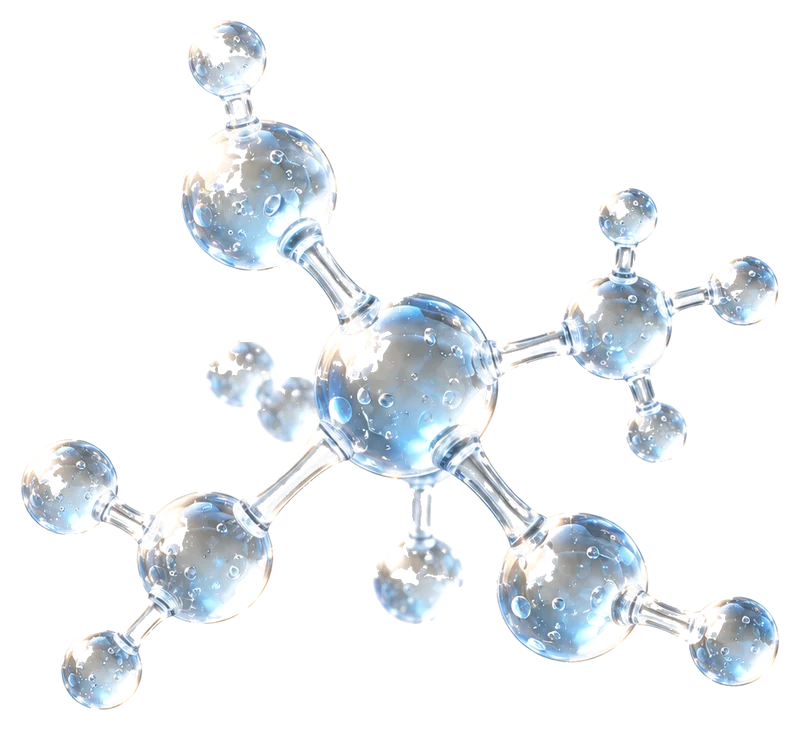

NAD+ Infusion
The NAD+ Infusion delivers NAD+ directly into the bloodstream as a dedicated treatment. NAD+ is a coenzyme found in every cell of the body and is essential for energy production. It works inside the mitochondria, the tiny structures within each cell that turn nutrients into usable energy. It is also needed by the enzymes that repair damaged DNA and help keep cells healthy. Levels of NAD+ fall naturally as we age and can also be depleted by stress, illness and alcohol. Research has linked this decline to lower cellular energy and a reduced ability to repair DNA. These changes contribute to common signs of ageing such as fatigue, reduced mental clarity and changes in the skin. Skin cells rely on NAD+ to produce the energy needed for renewal and to repair DNA damage caused by UV exposure. It has become one of the most popular treatments in wellness and longevity medicine, with people choosing it to support their energy levels, mental clarity, cellular repair and healthy ageing. Our NAD+ is sourced from a UK-registered supplier and each batch is supplied with a certificate of analysis confirming its quality and sterility. The infusion is available in two doses, 250mg and 500mg. For those who would like NAD+ combined with antioxidant vitamins, our Longevity Infusion offers the benefits of both.

What's in it
Ingredients
- NAD+ (dose below)
Ingredient guide
NAD+ (Nicotinamide Adenine Dinucleotide)
A coenzyme found in every cell of the body and essential for energy production. It works inside the mitochondria, the tiny structures within each cell that turn nutrients into usable energy. It is also needed by the enzymes that repair damaged DNA and help keep cells healthy. Levels of NAD+ fall naturally as we age and can also be depleted by stress, illness and alcohol. Research has linked this decline to lower cellular energy and a reduced ability to repair DNA. These changes contribute to common signs of ageing such as fatigue, reduced mental clarity and changes in the skin. Skin cells rely on NAD+ to produce the energy needed for renewal and to repair DNA damage caused by UV exposure. NAD+ has become one of the most popular treatments in wellness and longevity medicine, with people choosing it to support their energy levels, mental clarity, cellular repair and healthy ageing. Our NAD+ is sourced from a UK-registered supplier and each batch is supplied with a certificate of analysis confirming its quality and sterility.
Prices
| Dose | Price |
|---|---|
| NAD+ 250mg | £229 |
| NAD+ 500mg | £329 |
All infusions are prescribed and administered by, or under the supervision of, a registered clinician following individual clinical assessment. IV therapy is not a substitute for a balanced diet and healthy lifestyle. Individual results vary. Prices correct at time of publication and subject to change.
Back to all treatments